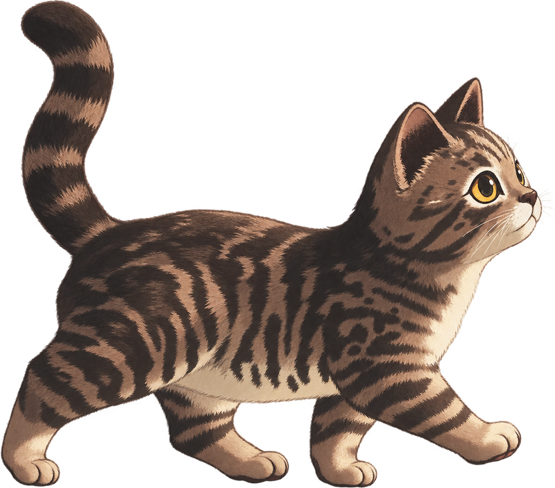

INTROEl llamado
Sus dueños la dejan lista para dormir: la alimentan, la acomodan y deciden por ella a qué hora termina el día. Es una gatica de casa y su mundo entero cabe en unas pocas habitaciones. Entonces otro gato la llama desde afuera y le propone algo que nadie le había propuesto nunca: salir.